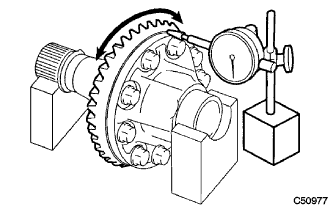

Transfer ASSY (4WD) decomposition |
| 1. Transfer & Transx Axle Setting Stud Bolt removes |
Use a double nut to remove four stud bolts.
| 2. Transfaser plug No.2 |
Remove the transfaser plug No.2 (filler plug).
Remove the gasket from the plug No.2.
| 3. Transfaser plug No.1 |
Remove the transfaser plug No.1 (filler plug).
Take off the gasket from the plug No.1.
| 4. Remove the transfadren plug |
Take off the Transfadlain plug.
 |
Remove the gasket from the Transfadlain plug.
| 5. Transfer case Briza plug removed |
Use tagane and hammer to float a little bleeder plug.
 |
Lightly click with a flathead screwdriver and remove the brief plug.
| 6. Transfer case cover No.1 |
Remove the eight bolts.
Use a brass bar and a hammer to remove the case cover from the case.
| 7. Transfadinamic Dampa removed |
 |
Remove the three bolts and remove the dynamic dampa from the extension housing.
| 8. Transfer case straight pin removed |
Take off 4 transfases straight pins.

| 9. Transfer Assembly Fixed |
Fix Transfer ASSY to overhaul attachment.
| 10. Transfaex station housing dust deflector is removed |
 |
Use a plastic hammer to remove the dust deflector from the extension housing.
| 11. Transfer extension housing oil seal removed |
 |
Use SST to remove the oil seal from the extension housing.
| 12. Transfer extension housing is removed |
 |
Take off the four bolts.
Use a plastic hammer to remove the extension housing from the case.
| 13. Preload inspection |
Use SST and torque wrench to inspect the startup torque (dripin pinium plode) within the backlash range.
 |
Using SST and torque wrench, check the starting torque (comprehensive plaord) with the dripinon and ring gear surface.
| 14. Backlash inspection |
 |
The dial gauge is applied to the surface of the ring gear at a right angle, the dripon pinion is fixed, and the ring gear is moved to inspect.
| 15. Inspection of teeth on ring gear and dripinion |
 |
The light gear of the ring gear is applied thinly and uniformly on both sides of the tooth surface, and the ring gear is rotated several times, and the ring gear is rotated and reverse.
| 16. Transfer case oil seal removed |
Use SST to remove the oil seal from the case.
| 17. Transfer case oil seal RH is removed |
 |
Use SST to remove the oil seal from the case.
| 18. Transfautput Shaft Spaca No.1 |
 |
Remove the two bolts and remove the bearing cap.
Use SST, flathead screwdriver and hammer to remove the spacer from the case.
| 19. Transforming gear mounting case washer No.2 |
| 20. Remove the transfering gear mounting case |
The ring gear mounting case is removed from the case with the ring gear and the ring gear mounting case bearing.
| 21. Remove the dripinion |
Use SST and hammer to solve the transfaigear nut.
Use SST to remove the transfaigear nut.
Use a press to remove dripin pinium, transfadripinion bearing RR (inner lace) and transpinion bearing spacer.
| 22. Transfer dripinione bearing RR removed |
Use a brass bar and a hammer to lightly tap the two places of the dripinion bearing RR (outer race) and remove it from the case.
| 23. Transfer dripinione bearing FR is removed |
Use SST and press to remove the dripinion bearing FR (inner lace) from the dripinion.
Use a brass bar and a hammer to lightly hit the dripinion bearing FR (outer race) and remove it from the case.
| 24. |
| 25. Ring Gear Mounting Case Bearing removes |
Ring Gear Mounting Case Bearing RH (outer race) is removed from the ring gear mounting case ASSY.
Use SST to remove the ring gear mounting case bearing RH (inner race) from the ring gear mounting case ASSY.
Use the SST to remove the ring gear mounting case bearing LH (inner race) from the ring gear mounting case ASSY.
 |
Use a brass bar and a hammer to remove two places in the ring gear mounting case bearing LH (outer race).
Take off the ring gear mounting case washer.
| 26. Ring gear swing inspection |
Put the ring gear mounting case ASSY on the V block.
|  |
Inspect the swing of the ring gear using the dial gauge.
| 27. Ring gear removed |
Fix the ring gear mounting case ASSY to the vise via an aluminum plate.
Mark the ring gear mounting case and the ring gear.
 |
Take off 10 bolts.
Use a plastic hammer to lightly hit the outer periphery of the ring gear.
| 28. Transferering gear mounting case swing inspection inspection |
Put the ring gear mounting case on the V block.
 |
Inspect the swing of the ring gear mounting case using the dial gauge.